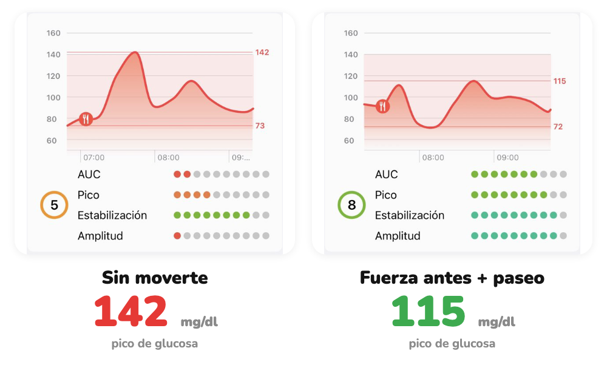

Misma comida, distinta respuesta
Mismo desayuno. Dos glucosas.
No comió menos. Se movió alrededor de la comida.
Desliza →
Hacemos visible lo invisible
No comió menos. Se movió alrededor de la comida.
Desliza →

Curvas reales de un Viber, mismo desayuno en dos días. La respuesta puede variar entre personas.
glucovibes.com